Condueet · B2B SaaS · API-first fintech infrastructure
Condueet's dashboard is where the product stops being a promise and starts being a tool: a developer proving the API works, a business lead keeping customer data flowing, an owner watching cost and access. Three different jobs, three different definitions of "working." I designed the console that answers to all three, organised by role rather than by feature.
Role
Product Designer
ICP
African fintechs: lending, payments, budgeting
Model
Self-serve B2B SaaS · usage-based, scales with connected accounts
Surfaces
Developer console · operations views · owner hub · wallet
Timeline
2024–25
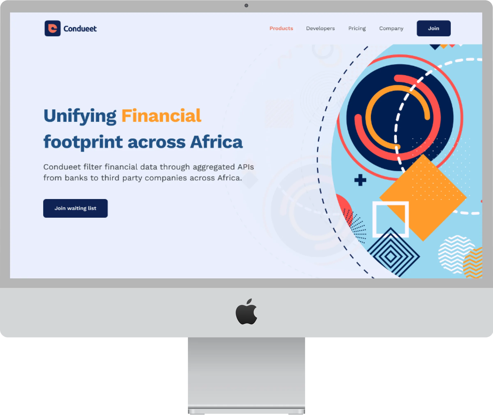
The snapshot
The same screens are read by three people with nothing in common except the account they share. A developer wants proof the integration works. A business lead wants to know which customer just broke and how to fix it. An owner wants to know who holds a key and what it costs. A dashboard built feature-by-feature serves all of them badly; I built one where the role decides the surface.
01 · Challenge
One console, three jobs, no sales team to explain it
Three roles evaluate the product unassisted, and each has a different, unforgiving definition of "working." One layout could not flatter all three.
02 · My role
End-to-end design of the role-based dashboard
IA, flows, permission model, states and interactive prototype for the developer console, operations views, owner hub and wallet, research through UI.
03 · Outcome
A console where the role decides the surface
Switching role re-renders the navigation itself, and every screen is built to finish exactly one job, down to its failure states.
Developer
3 min
Median time-to-first-call, the number the developer reports back to the team
Operations
1 click
From a flagged connection to the fix that clears it
Owner
< 1 min
From spotting a leaked key to a revoked one
Every screen
3 states
Resolves to done, empty, or an honest failure, never a dead end
The three seats
The dashboard is not one audience with one job; it is three people who each decide the product's fate from a different chair. I designed for the chair, not the average, and I named the moment in each seat that the whole console had to earn.
01 · The developer
Evaluates in an afternoon.
Time-to-first-200 is the whole audition. Slow or unclear here and the trial quietly ends.
02 · The business lead
Lives here daily.
Needs names, not counts, and the fix one click away, because a broken connection is a customer, not a number.
03 · The owner
Arrives on the worst day.
A leaked key, an odd charge. What they need is speed and certainty, not a tour of the settings.
Where I spent the design budget
On the worst moments, the failed call, the broken connection, the leaked key, because a data product is judged on its worst day, not its best. Every calm, happy-path screen was designed to be competent; the failure states were designed to be the reason someone trusts the platform.
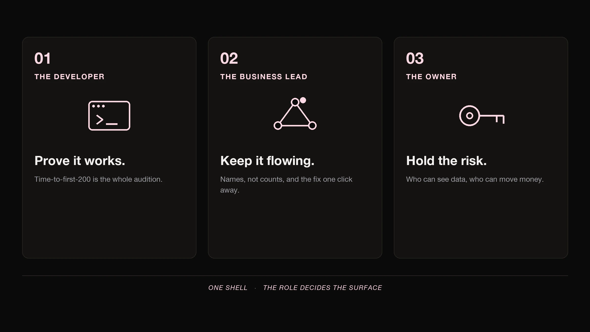
The approach
Five phases, run pragmatically, so every screen traces back to a real user need and a measurable goal. The sections below walk through each phase and the work it produced.
01 · Discover
Strategy · Understand the roles · Jobs audit · Affinity mapping · HMW
02 · Specify
User journeys · User flows · Information architecture · Permission model
03 · Design
Wireframes · Design system · Screens · States
04 · Evaluate
Interactive prototype · Flow testing
05 · Iterate
What testing sent back
Phase 01
Understand the three seats and the single question that separates a useful screen from a busy one before proposing any layout.
Strategy
The dashboard isn't adopted by an organisation; it's adopted by three people in sequence. The developer clears the technical bar, the business lead decides it's liveable day to day, and the owner signs off on the risk and the bill. A screen that only pleases one of them still loses the account.
Jobs audit
I listed every existing screen and asked one thing of it, which seat does this finish a job for. Screens that answered "all of them, a little" were the problem: they belonged to no one and finished nothing. That question became the filter for everything that followed.
Prove it works
The developer's job: keys, a quickstart, and logs that explain a failure instead of hiding it.
Keep it flowing
The business lead's job: see which customer broke, by name, and reach the fix without leaving the row.
Hold the risk
The owner's job: know who holds access and what it costs, and act on both from one place.
Affinity mapping
Interview notes and support tickets clustered into a handful of themes that cut across roles: "I can't tell what broke," "I don't know what this will cost," and "I don't trust an empty screen." Each theme was a shared failure, felt differently in each seat.
How-might-we
Each theme became a question the design had to answer: how might we make a failure explain itself; how might we put cost next to the action that drives it; how might we make an empty state feel intentional rather than broken. The answers are the screens in Design.
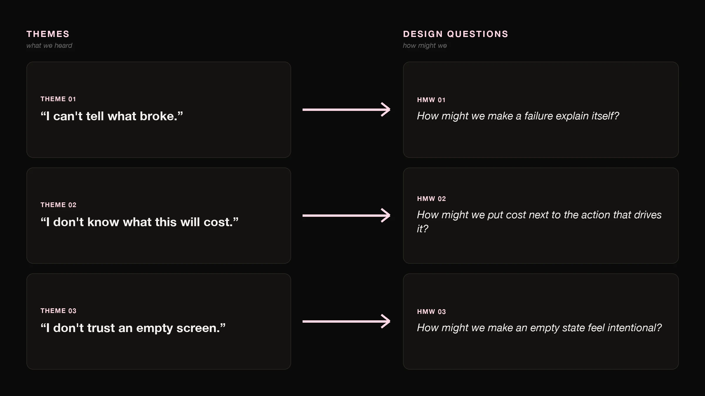
Phase 02
Turn three jobs into one structure, an information architecture and a permission model that make the role, not the feature list, the organising idea.
The defining decision
Most consoles show everyone the same navigation and grey out what you can't touch. That makes the owner's console as noisy as the developer's. Here, switching role changes the navigation itself: the developer sees keys and logs, the business lead sees customers and connections, the owner sees access and cost. Permissions still guard the edges, but the surface is chosen for the seat first.
Information architecture
One shell holds everything, a persistent header, the role switcher, and a single content area. Inside it, three rails, one per seat, swap in and out. Wallet and Settings live at the bottom of every rail, always in the same place, so the two things every role eventually needs are never hunted for.
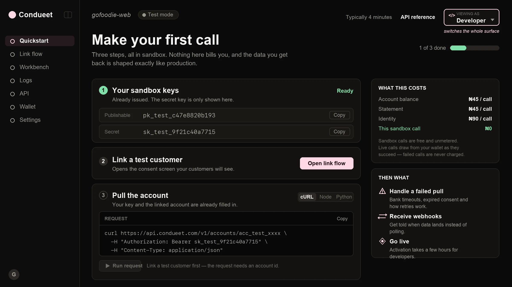
User flows
Navigation is deliberately small: the rail for the top-level move, a row drill-down for detail, and contextual cross-links for the moments a job jumps a seat, a business lead who needs the owner to revoke a key, say. Three patterns, applied everywhere, so the console never has to be re-learned.
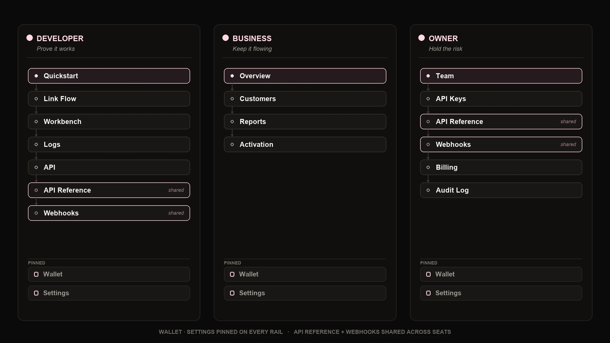
Phase 03
From structure to a shared, high-fidelity system, and then the screens that finish each seat's job.
Wireframes
Mid-fidelity wireframes locked the hierarchy in each rail before any visual design, keys and status first in the console, names and health first in operations, access and cost first in the owner hub, so the most important thing in each seat was never buried.
The cut
Each surface below is shown with the seat it serves, the job it finishes, and the failure it refuses to hide. If a screen couldn't name the single job it completed, it didn't ship.
The console opens on "Make your first call": three sandbox steps, keys already issued, link a test customer through the consent screen, then pull the account with copy-ready cURL, Node or Python. Sandbox is free and unmetered, so the whole audition costs nothing but a few minutes.
Design decision · from the jobs audit
The thing that proves the product works can never be buried, so the quickstart leads the console, every request comes pre-filled with the linked account, and a failed pull links straight to the log line that explains it.
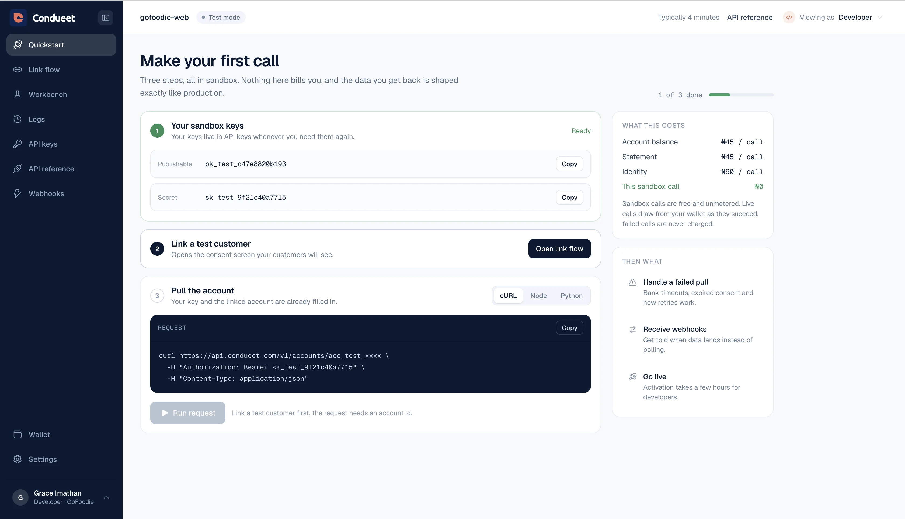
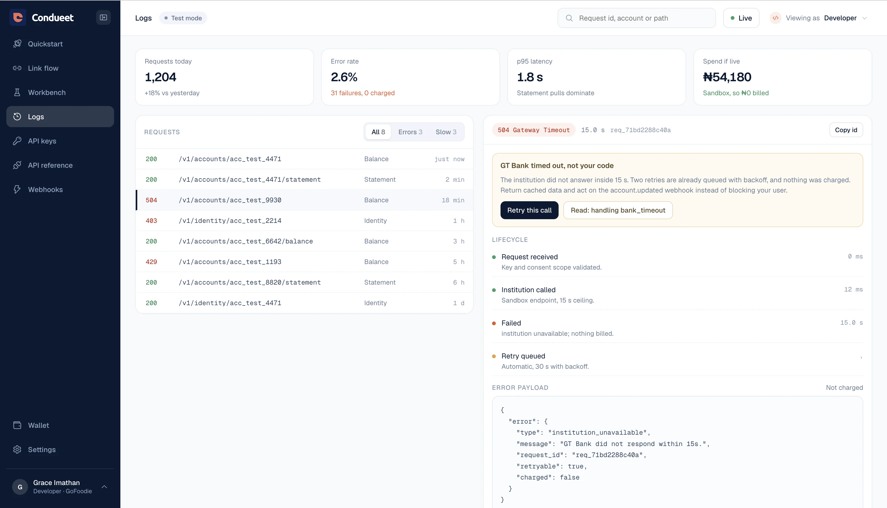
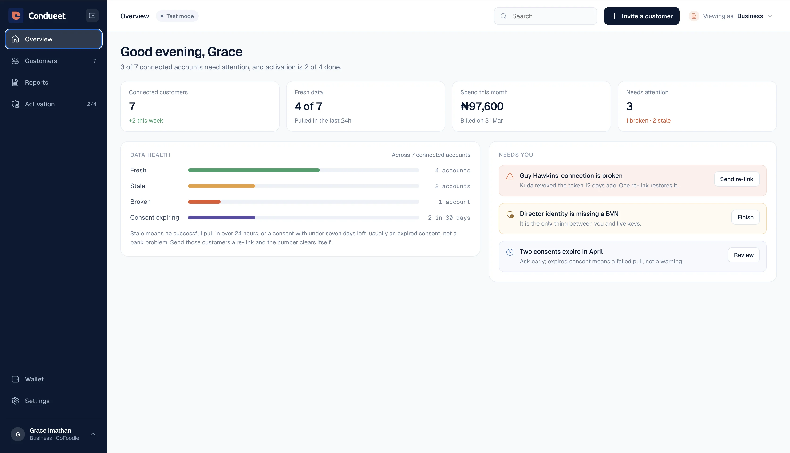
The overview opens on the numbers that matter, connected customers, fresh data, spend this month and what needs attention, then a Data Health strip splits every connection into fresh, stale, broken or consent-expiring. "Needs you" turns each problem into a one-line job with its fix attached.
Design decision · from theme "I can't tell what broke"
The business lead lives here daily, so the overview names each break by customer and attaches its fix, a re-link, a finish-verification, a review, so a problem arrives as a task, never a mystery.
Access and money in one place. Team makes the roles explicit, Owner, Admin, Developer, Analyst, and states plainly who can see customer data and who can move money; only an owner can change them. API keys, billing and an audit log sit alongside, so the worst day, a leaked key, is a short, certain path.
Design decision · from the owner's worst day
The owner arrives in a hurry, so each role is written in plain "what they can do" language, and rotating or revoking a live key is one unmistakable action next to the key it kills.
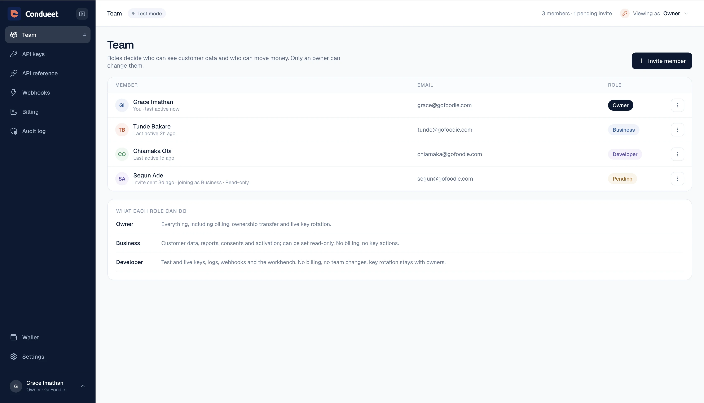
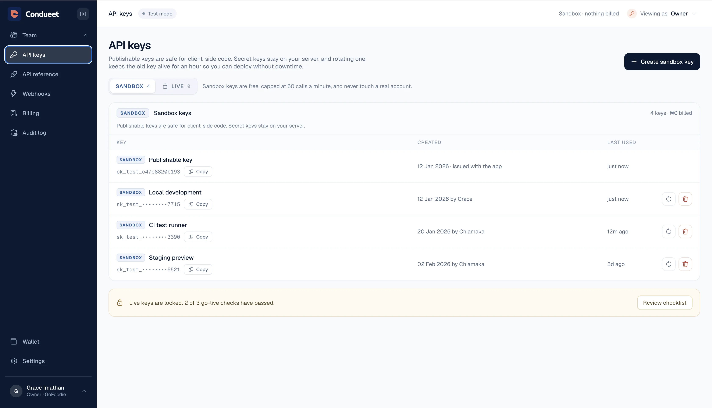
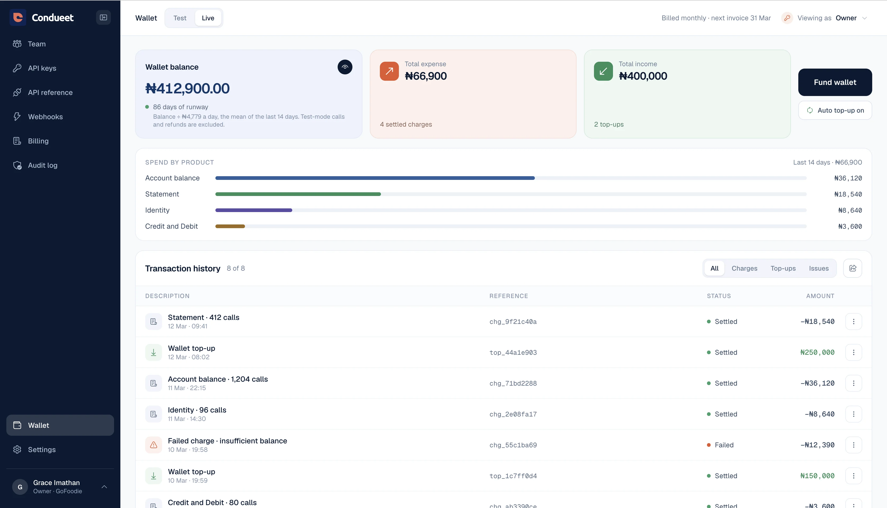
Numbers that reconcile and runway you can plan on. Live calls draw from the wallet only as they succeed, failed calls are never charged, and every charge ties back to the connected account and call type behind it.
Design decision · from theme "I don't know what this will cost"
Usage pricing breeds bill-shock, so the wallet reconciles line by line and states runway in days, turning a scary variable into a number you can plan around.
The interface tells the truth about what the API returned. A 403 says what permission is missing and who can grant it; an empty state says why it's empty and what to do; loading is a shape, not a spinner over a blank page.
Design decision · from theme "I don't trust an empty screen"
A data product is judged on its worst day, so failure states were designed first, every one resolves to a cause and a next step rather than a dead end.
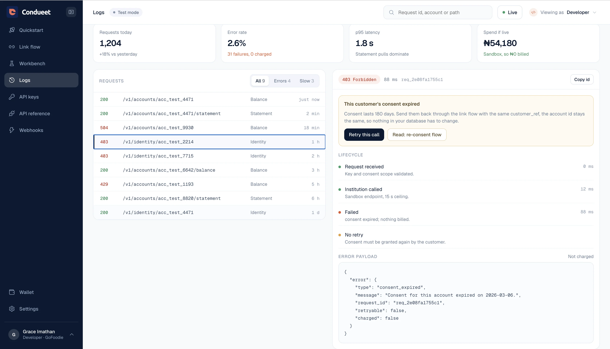
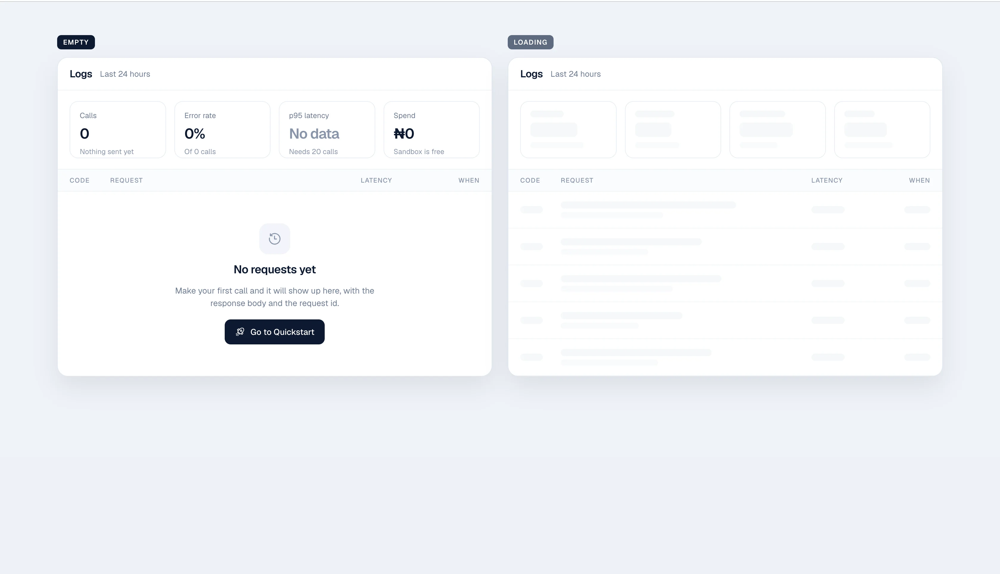
Phase 04
Put the console in front of people in each seat and pressure-test it against the jobs set in discovery.
Prototype
I test in working prototypes, not linked mockups: real navigation, real role switching, and real failure states, so the console is judged the way a user would actually meet it.
Flow testing
One make-or-break moment per seat, tested until it held: the first 200, the broken-connection fix, and the leaked-key response.
The first 200
Could a developer reach a working call without leaving the console? Keys, environment and quickstart were re-ordered until they could.
The broken-connection fix
Could a business lead find the failed customer and clear it in one path? The overview and detail were tightened around that single move.
The leaked-key response
Could an owner revoke access under time pressure without second-guessing? The revoke action and its confirmation were made unmissable and reversible-safe.
Conclusion
Role-first navigation validated cleanly, people found their seat and stayed in it, and testing pinpointed the specific frictions to resolve next: the role switcher's discoverability, the wording on a 403, and the density of the operations overview.
Phase 05
Close the loop, make tweaks that fix real usability issues rather than adding surface. Each pass targeted one finding from testing.
Fix 01
Role switcher, made obvious
A few users missed that the whole surface changes with the role, so a second switcher was added to the header, naming the active seat rather than just iconising it, so the control is there wherever the eye lands.
Fix 02
A 403 that says who can help
"Forbidden" told operations nothing, so the error now names the missing permission and points to the owner who can grant it.
Fix 03
Operations overview, calmer
The overview read as dense under load, so healthy connections collapsed by default and only what needs attention stays expanded.
Impact
Read against the three seats: each figure below belongs to the job it unblocks. Figures are illustrative targets modelled on the design rather than audited post-launch results, and I've marked them as such rather than dress them up.
The developer
3 min
Median time-to-first-call, the number that survives the internal build-vs-buy conversation
The business lead
1 click
From a flagged connection to the fix that clears it, without leaving the row
The owner
< 1 min
From a leaked key spotted to a revoked one, on the worst day
Honest failures
100%
Of failure states resolve to a named cause and a next action, never a dead end
Why these are the right metrics for this dashboard
The dashboard is where three separate decisions get made, and each metric maps to one of them. A developer who reaches a working call commits the integration; a business lead who can clear a break in one click keeps the account healthy enough to renew; an owner who can revoke access in under a minute keeps trusting the platform on its worst day. Serve all three seats and the console stops being a place people tolerate and becomes the reason they stay.
Reflection
Design for the seat, not the average.
The role-first surface beat every clever shared layout. Choosing the navigation for who's looking, rather than showing everyone everything, was the decision the whole console rested on.
Failure states are the product.
Designing the 403, the broken connection and the empty screen first, not last, is what earned trust. The happy path is table stakes; the worst day is the brand.
Put cost next to the action.
In a usage-priced product, showing spend beside the thing that drives it turned a scary variable into a controllable one, and made the owner an ally rather than a brake.
Next: cross-seat handoffs.
I'd deepen the moments a job jumps a seat, a business lead escalating a revoke to an owner, so a request travels between rails without leaving the console.
What this project taught me
The dashboard taught me that a console with three audiences isn't won on the polished overview; it's won on the failed call, the broken connection and the leaked key. Design the worst day first, choose the surface for the seat that's looking, and the same three screens that could have felt like a compromise become the reason each of them trusts the product.
Next project
Aria · AI Student Assistant
→